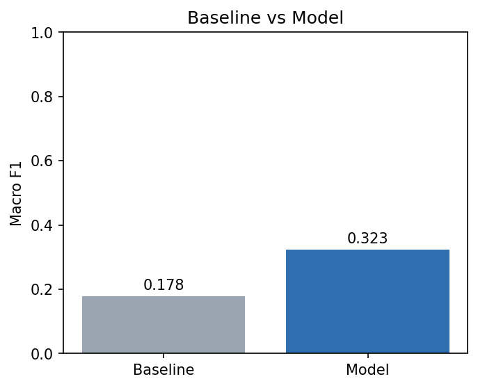
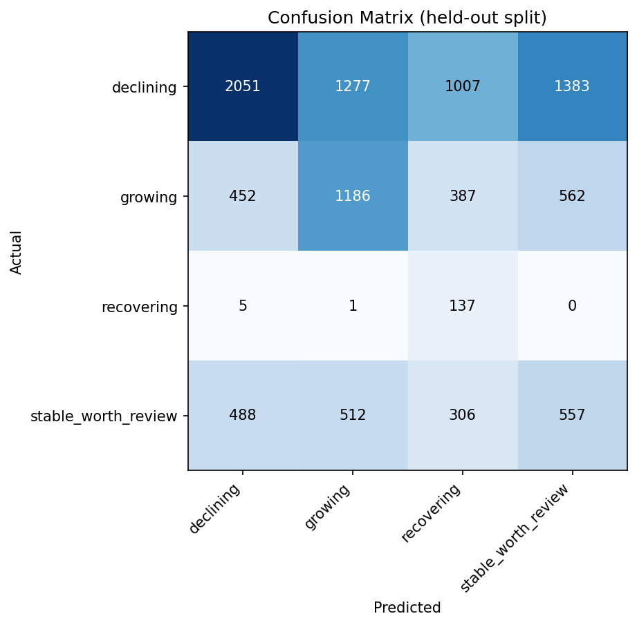
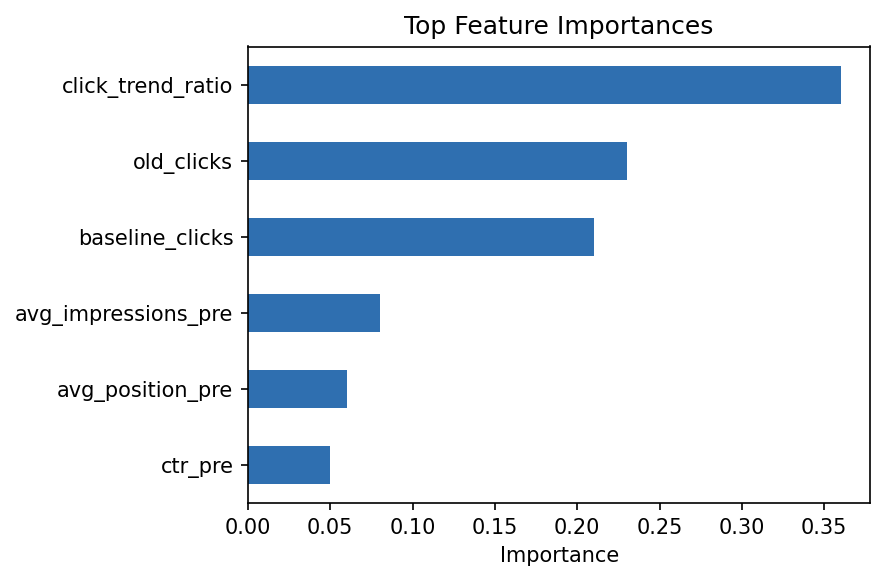

A ranked, explainable action engine for deciding which content to protect, rewrite, monitor, or review — built on the FlyRank ML Internship dataset.
Content teams cannot manually review hundreds of thousands of pages each month, so which pages most need attention, and what should be done about each one? We label pages as growing, declining, recovering, or stable using three sequential 30-day click windows (Old → Baseline → Current), then train a RandomForest classifier on features computed strictly before the Current window to avoid leakage. On a held-out, page-grouped split, the model reaches a macro F1 of 0.323 against 0.178 for a majority-class baseline — nearly double, though still far from reliable on every class individually. The resulting ranked action engine assigns a protect / rewrite / monitor / review recommendation and a plain-language reason code to all 51,555 scored pages, flagging 14,878 for rewrite and 14,829 for protection as the highest-priority review queues.
Most content teams sit on far more published pages than they can realistically re-review on a regular cadence. Traffic to any given page drifts for reasons that are rarely obvious from a dashboard alone — seasonal interest, a competitor publishing something stronger, a page simply aging past its usefulness, or a genuine recovery after an earlier dip. Without a systematic way to surface which pages are moving and in which direction, review time tends to go to whichever page someone happened to notice, not necessarily the page that needs it most.
This project treats that triage problem as a classification task: given a page's own click history, can we predict whether it is currently growing, declining, recovering, or stable, and turn that prediction into a concrete recommended action? The goal is not to explain why a page's ranking changed in any search engine, and the model never claims to. It is narrower and more actionable: which pages, on the evidence of their own click trend alone, are worth a human's attention first — and what is the simplest plausible reason to point to when they look.
The decision this supports is a prioritization decision, not a publishing decision. A content lead reading the ranked output should be able to answer, in under a minute, "what are the pages I should look at this week, and why," rather than opening every analytics dashboard page one at a time.
All data comes from the FlyRank ML Internship warehouse, a gated release hosted on Hugging Face,
read via DuckDB directly over the hf:// path with a read-only access token. Page and
client identifiers in the warehouse (content_hash_id, client_hash_id)
are already pseudonymized in the release itself.
| Field | Value |
|---|---|
| Table | fact_content_daily_performance |
| Metric used | Google Search Console clicks (gsc_clicks) |
| Full warehouse date range | 2025-01-27 to 2026-06-30 |
| Old window | 2026-04-01 to 2026-05-01 |
| Baseline window | 2026-05-01 to 2026-05-31 |
| Current window | 2026-05-31 to 2026-06-30 |
| Distinct pages in warehouse | 427,292 |
| Pages retained after exclusions | 51,555 |
Pages with zero recorded clicks in either the Old or Baseline window are dropped before labeling, since a percent-change calculation against a zero denominator is undefined rather than simply small. This narrowed 427,292 pages down to 51,555 — the large drop reflects how many pages in the full warehouse have little or no click activity in a given 30-day window, not a labeling error.
No client names, domains, URLs, private queries, credentials, or raw exports appear anywhere in this document, the notebook, or the repository. Page and client identifiers shown throughout are the warehouse's own pseudonymized hashes.
Every retained page is assigned to exactly one of four buckets based on click behavior across the three sequential windows:
| Label | Rule | Share of pages |
|---|---|---|
| Declining | Current vs. Baseline clicks down more than 20% | 55.3% |
| Growing | Current vs. Baseline clicks up more than 20% | 25.1% |
| Stable / worth review | Everything else — small moves either way | 18.2% |
| Recovering | Old→Baseline was declining, but Baseline→Current has turned upward | 1.5% |
The class split is heavily imbalanced, with declining pages making up more than half the dataset and recovering pages under 2% — a limitation carried through to the Results section below.
Every feature is computed using only Old- and Baseline-window data, never Current-window data —
the project's core leakage guard, since the label itself is derived from the Current window. The
feature set used: the ratio of Baseline to Old clicks (click_trend_ratio), raw Old
and Baseline click counts, average impressions and average search position prior to the Current
window, and pre-Current click-through rate.
A majority-class predictor — always guess "declining," the most common label in the training set — serves as the baseline that the model must beat.
Rows are split with a grouped shuffle split (80/20), grouped by content_hash_id,
rather than a plain random split. This matters because a random row-level split can let the same
page appear in both train and test, inflating the apparent accuracy. Grouping by page keeps every
row for a given page entirely on one side of the split.
Baseline and model are evaluated on the identical held-out split of 10,311 pages, reported as macro F1 so that performance on smaller classes (like recovering, at 143 test pages) isn't masked by the largest class.

Figure 1. Model macro F1 (0.323) nearly doubles the majority-class baseline (0.178) on the identical held-out split.
| Class | Precision | Recall | F1 | Support | |
|---|---|---|---|---|---|
| Declining | 0.68 | 0.36 | 0.47 | 5,718 | |
| Growing | 0.40 | 0.46 | 0.43 | 2,587 | |
| Recovering | 0.07 | 0.96 | 0.14 | 143 | |
| Stable / worth review | 0.22 | 0.30 | 0.26 | 1,863 | |
| Accuracy | 0.38 | 10,311 | |||
| Macro avg | 0.35 | 0.52 | 0.32 | 10,311 | |

Figure 2. The model's single biggest failure mode: declining pages are predicted correctly only 36% of the time, with large numbers misclassified as growing or stable.

Figure 3. click_trend_ratio dominates the model's decisions, followed by the raw Old and Baseline click counts — the pre-Current CTR and position features contribute comparatively little.
The model clearly beats the baseline on overall macro F1, but the class-level picture is mixed. Recovering pages are caught almost every time (96% recall) but at very low precision (7%) — the model over-predicts "recovering" far more often than it's actually true, likely because the class has only 143 test examples to learn from. Declining pages, the largest and most consequential class, are caught only 36% of the time despite 68% precision when the model does call them — meaning many genuinely declining pages are still missed and would need a secondary, simpler rule (e.g. the raw click-trend-ratio threshold on its own) as a complementary check before relying on the model alone.
Each predicted label maps to a concrete next action, applied across all 51,555 scored pages:
| Recommended action | Pages | Maps from label |
|---|---|---|
| Rewrite | 14,878 | Declining |
| Protect | 14,829 | Growing |
| Review | 12,398 | Stable / worth review |
| Monitor | 9,450 | Recovering |
Example reason codes attached to the highest-confidence "rewrite" calls (confidence ≈ 0.97)
combine two signals most often: a falling click_trend_ratio ("clicks trending down
vs. older window") together with a low pre-Current click-through rate ("low CTR relative to
visibility"). Pages flagged with no strong signal default to "review" rather than a more drastic
action, consistent with the decision-support framing above.
work/notebooks/capstone.ipynb — runs end to end given a Hugging Face read token.features.parquet, ranked_action_engine.csv,
and the three charts embedded above (also saved in this docs/ folder).Built on the FlyRank ML Internship dataset.